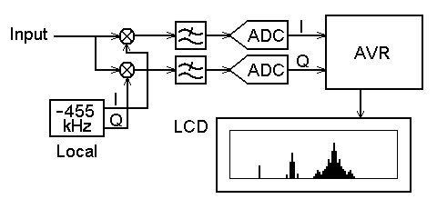

Radio Spectrum Monitor
October 17, 2005

October 17, 2005
This is an experimental work to monitor a spectrum pattern in radio band, and is a continuous project from Audio Spectrum Monitor. To analyze the spectrum of an input signal, I chose an Atmel AVR microcontroller that used in the Audio Spectrum Monitor to process FFT. When think it easy, it can be thought that sample an input RF signal directly and analyze it will do. However, you will able to recoginize that there are some techinical difficulties from following reasons.
To solve this difficulties, there is a generic method called Frequency Conversion. In brief, down-convert the RF signal to lower frequency with a mixer (multiplyer) before sampling stage. When process the signals as complex signal for the frequency conversion, it can handle negative frequency, and the center frequency can be moved to zero hertz without interference by image signals. This means that the sampling frequency higher than span frequency range will do. When monitor a 100 MHz band in span of ±1 MHz, it will be converted down to 0±1 MHz and sampled it in only 2 Msps. You may able to understand easy when explain it as `cut and paste' on the frequency domain. Actually, this kind of radio spectrum monitors are being supplied from some radio equipment vendors.
In this project, an intermediate frequency signal from mixer output of an AM radio (fC=455kHz) is used as an input signal. It is converted again down to zero hertz in complex signal, so that the signal path, mixer and local oscillator, must be composed for complex signal processing. The complex signal is expressed in two wire IQ signal, the real part corresponds to I signal and the imaginary part corresponds to Q signal. The arithmetic circuits for IQ signal are realized in method of complex arithmetic. For example, a mixing circuit for IQ signals requires four multiplyers and two adders from the formula:
(a1+jb1)(a2+jb2) = (a1a2-b1b2)+j(a1b2+a2b1)
Therefore the analog process of IQ signal requires large scale circuit compared to real signal process, so that the IQ signal is usually digitized after minimal analog process and following process are done in digital processor. In case of one input is real, only two multiplyer will do. By the way, when view a real signal as a complex signal, its spectrum pattern of positive part and negative part is line symmetrical. Real signal can be saied that the imaginary part is always zero. The case of complex signal becomes such state is: there are conjugate complex numbers, changed sign of the imaginary part (changed sign of frequency), for each complex frequency components. Therefore the real signal has symmetrical spectrum around the origin.
Right image shows the block diagram for radio spectrum monitor. An IF signal from radio receiver is used as input signal, multiply it with a complex local signal (-455 kHz) and IQ signal is generated. It is digitized after filter out unnecessary frequency components and following processes are done with an AVR. Somebody may remember something when look this block diagram. Yes, this is an RF signal process which can be seen in many one-chip digital communication ICs. The signal processing of analysis, moduration and demoduration in complex signal is a basic technology on digital communications.
Well, this is a circuit diagram for radio spectrum monitor. I chose two Philips SA612A general purpose DBM ICs for the mixer circuit that is the most significant block in this circuit. DBM (double balanced mixer) is often used as a functional unit in ASSP but single function DBM IC is not many. There are old MC1496 (MOT) and new NJM2594 (NJR) other than SA612A. These are available at Digi-Key. The reason what I chose SA612A is point of differencial input/output and no external setting component. In this circuit, mixer output is being used in DC coupling, differencial output is suitable from its low offset drift. And there are also accurate analog multiplyer ICs but they are too expensive. Local signal (-455 kHz IQ signal) is generated with LC oscillator and phase shifters. It is injected to DBMs. For anti-aliasing low pass filter, MAX295 is used from my stock. But its roll-off is dull, a little alias can be found in spectrum. MAX297 is recommended better than MAX295. To digitize the IQ signal, both channels must be sampled simulteneously, however, a S&H of integrated ADC of AVR is shared by all input channels, so that it cannot use in simulteneous sampling. I aborted to use the integrated ADC, and used two NS ADCS7476 12 bit ADC. LCD module is from Junk LCD. SG12232C used in audio spectrum monitor and any other glaphic display modules will able to be used.
The firmware samples IQ signal, analyze it in FFT algorithm and draw spectrum pattern into LCD module. These processes are done in refresh rate of approximately 60 times per second. IQ signal is sampled 128 points in samplig rate of 64 ksps at a time, span frequency of ±32 kHz around local frequency (455 kHz) can be monitored. Now horizontal scale (frequency) is labeled on the LCD but when measure local frequency of the radio receiver, the tuned frequency will able to be displayed under the spectrum bars - I became aware this idea during writing this document and implemented it in a hurry:-) When a local input from receiver is valid, frequency scale is appered in the LCD and tuned frequency is refrected.
The fast FFT routine is copied from audio spectrm monitor as is. Basically, FFT algorithm is in complex input/output, it can be used for complex signal with no modification unless it is optimized for real input. When input is a real signal, only half of result is valid because it is symmetrical around the origin. Ofcourse each domain of output is valid when input is a complex signal.
When apply a power, a menu window will apper and can be set working condition with a joystick. Each item can be selected with up/down action, changed with right action and enter running mode with push action. In running mode, up action hold/resume display, down action resets peak hold (if selected), left action redo automatic null (offset cancellation of ADC input) and push action returns to menu. Window function can also be selected, you will able to recognize difference between each window. Wave form mode monitors raw IQ signal but it will not useless.
An AM super heterodyne radio receiver is used as a signal source. It may be modified to export mixer output and local oscillator output (this can be ommited). When it is a transister radio, large local frequency component (tuned freqency + IF) will pass through the mixer due to the mixer will be cheap emitter injection type. This affects dynamic range of DBM input, so that unnecessary signals above IF must be filtered out with a LPF. When IF frequency of radio receiver is 450 kHz, please read "455" in this page to "450".

{kind=link}
{kind=link}
{kind=link}
{kind=link}
{kind=link}
{kind=link}